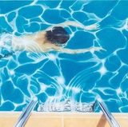

Ralph Breaks the Internet is, without a doubt, the best film made about the lives of computer programs since the Wachowskis' Matrix sequels; I mean this as a glowing compliment.

Fear not, because as much fun as Wreck-It Ralph is, there's no doubt that Ralph Breaks the Internet is better - smarter, funnier, and with a message that resonates for kids and adults alike.


影评：
如果说六年前的《无敌破坏王》将观众带回到了80年代的游戏世界，那么这部《无敌破坏王2》则无疑则会令成长于互联网时代90后乃至00后年轻观众们更佳具有共鸣。。
“迪士尼在本片中展现出了前所未有的自黑精神，将自己以往影片尤其是公主电影里的诸多设定拿来大加调侃。 某种意义上说，这部影片成功给迪士尼公主们树立了更符合时代的崭新女性形象。
Ralph Breaks the Internet is, without a doubt, the best film made about the lives of computer programs since the Wachowskis' Matrix sequels; I mean this as a glowing compliment.
Fear not, because as much fun as Wreck-It Ralph is, there's no doubt that Ralph Breaks the Internet is better - smarter, funnier, and with a message that resonates for kids and adults alike.